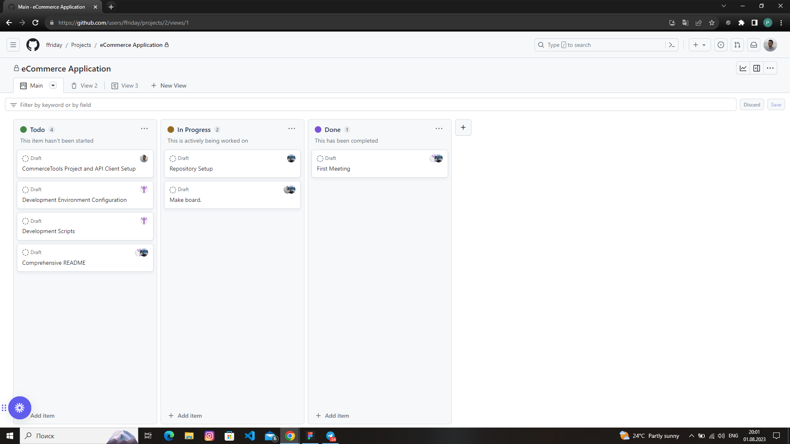
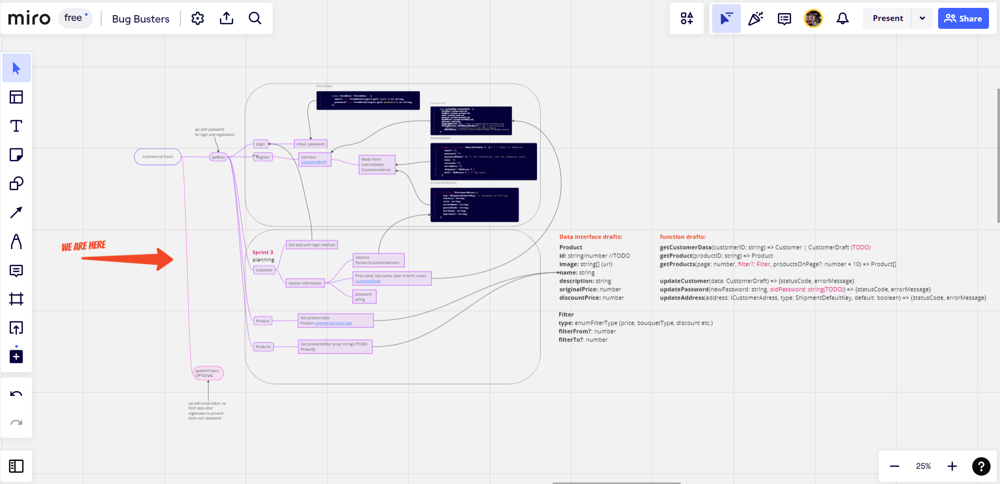
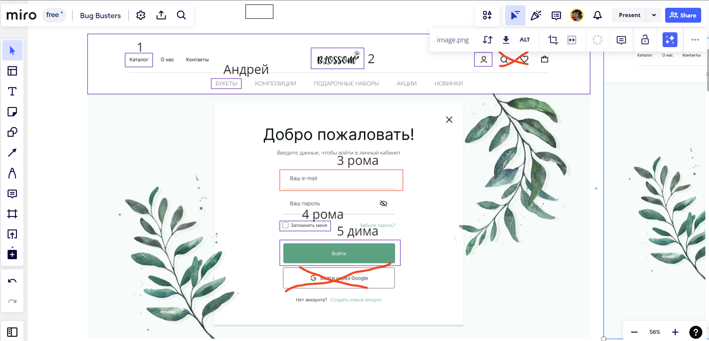
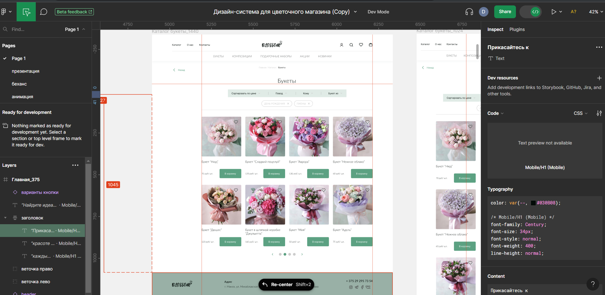

BugBusters: Разработка eCommerce Платформы
Участники и их роли в команде:
Вклад участников проекта
Трудности с которыми столкнулись
Раскрытие уникальных функций, которые были задуманы и реализованы благодаря командной работе.
Подход к распределению задач и мониторингу их выполнения.
Коммуникационные инструменты
GitHub Projects
Miro (logic)
Miro (desing)
Figma
Технологический стек
Аналитика GitHub: показатели активности и аналитика проекта.
Пример Pull Request and Associated Code Review
README-документация: рекомендации по настройке локального проекта.
Благодарим Андрея, участника первого спринта, который к сожалению вынужден был покинуть нашу команду, за помощь в погружение мир React!
Благодарим Ирину Кадевич за предоставление макета дизайна сайта, а также подбор и нейминг букетов для нашего магазина.
Спасибо нашим менторам Владимиру Пекуну и Анастасию Нитиевскую за дельные советы и комментарии!
Мы хотели бы выразить нашу искреннюю благодарность жюри за внимание и время, которые вы уделили нашему проекту.
Наш проект был успешным благодаря командной работе, инновациям и усилиям каждого участника.
Мы демонстрировали способность адаптироваться и решать трудности в процессе разработки, и это сделало нас сильной командой.
Готовы подробно обсудить наш опыт и проект, а также ответить на вопросы жюрию